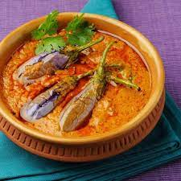

This is Varun Kumar Reddy Bhavanam, for the peace in mind and closer to heart of Lord Shiva also for the mouth watering food I fly to Kedarnath.
Gutti vankaya kura is a stuffed eggplant dish from the Andhra cuisine. Here the stuffing is made from a mix of desiccated coconut, peanuts and spices, which is ground finely. Small tender brinjals are stuffed with this ground masala and then cooked. A bit of tamarind pulp is added to the gravy for a faint sour taste.
